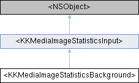

Inheritance diagram for <KKMediaImageStatisticsBackground>:

Properties | |
| NSObject< KKMediaImageStatisticsProcess > * | backgroundStatistics |
| 背景统计处理 | |
| CGFloat | backgroundAverage |
| 背景平均亮度 | |
| UIColor * | backgroundMaximum |
| 背景最高亮度通道数值 | |
| NSArray< NSNumber * > * | defocusLuminanceHistogramBlocks |
| 背景最低亮度通道数值 | |
| CGFloat | defocusLuminance |
 Properties inherited from <KKMediaImageStatisticsInput> Properties inherited from <KKMediaImageStatisticsInput> | |
| CIImage * | ciScene |
| CGRect | renderCIRegion |
| 统计局部区域, y轴朝上 | |
| CIImage * | ciDefocusMatte |
| 虚化区域遮罩, 完成统计后释放 | |
Property Documentation
◆ defocusLuminance
|
readnonatomicassign |
虚化区域的灰度比例 0-1,
◆ defocusLuminanceHistogramBlocks
|
readwritenonatomicretain |
背景最低亮度通道数值
虚化背景直方图分布
The documentation for this protocol was generated from the following file:
- Shine/Shine/Sections/ImportMediaSection/Model/Image/KKMediaImageStatistics.h